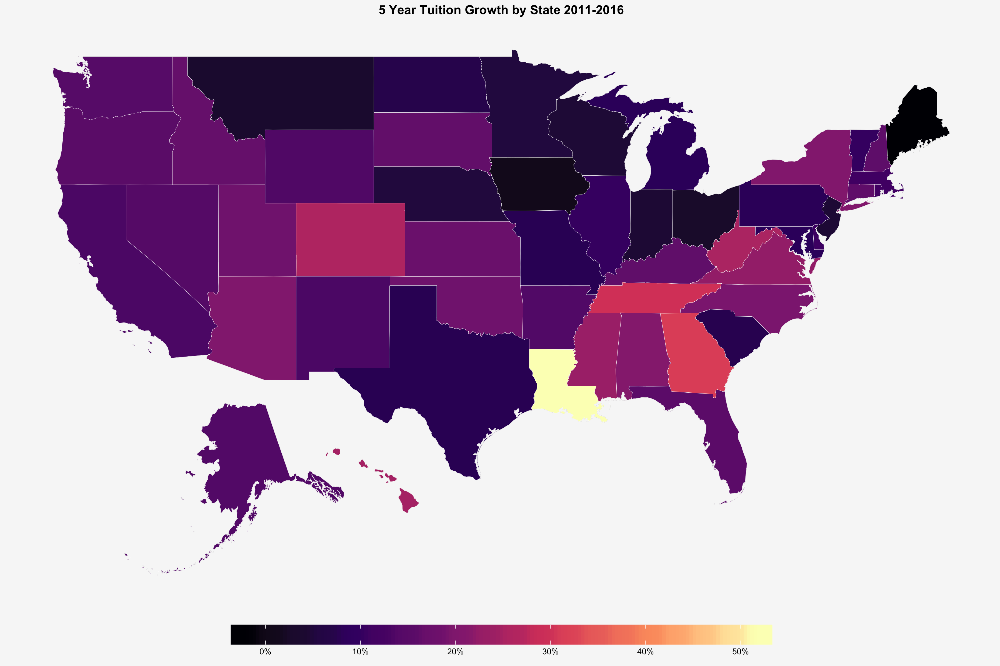
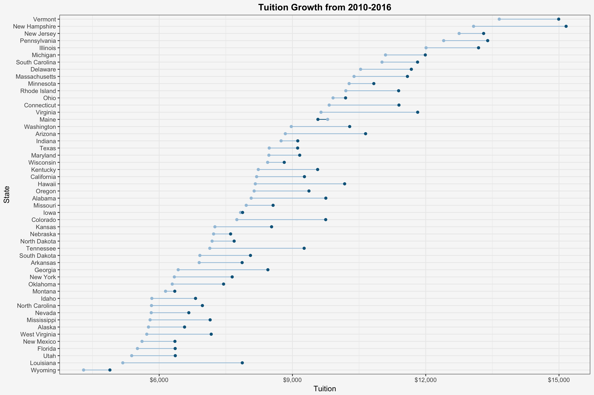

library(tidyverse)
library(readxl)
library(albersusa)
library(ggthemes)tuition.raw <- readxl::read_xlsx("/data/us_avg_tuition.xlsx") %>%
rename(state = State) # read in raw data and rename a column
tuition.clean <- tuition.raw %>%
gather(year, tuition, `2004-05`:`2015-16`) %>% # put data in tidy long format
group_by(state) %>%
mutate(lag = lag(tuition, 5),
pct.change = (tuition-lag)/lag) %>% # compute rolling 5 yr. percent change
na.omit()
# create our map data
us <- usa_composite()
us_map <- broom::tidy(us, region = "name")# Plot choropleth map
ggplot() +
geom_map(data = us_map, map = us_map,
aes(x = long, y = lat, map_id = id),
color="#2b2b2b", size=0.05, fill=NA) +
geom_map(data = filter(tuition.clean, year %in% "2015-16"),
map = us_map,
aes(fill = pct.change, map_id = state),
color = "white", size = .1) +
scale_fill_viridis_c("", labels = scales::percent, option = "A") +
labs(title = "5 Year Tuition Growth by State 2011-2016") +
theme_map() +
theme(legend.position = "bottom",
legend.justification = "center",
legend.key.width = unit(1.3, "inches"),
legend.background = element_blank(),
plot.title = element_text(hjust=0.5, face="bold"),
plot.background = element_rect(fill="#f7f7f7", color = "transparent"),
panel.background = element_rect(fill="#f7f7f7", color = "transparent"))
# Plot barbell graphic showing changes in tuition prices
tuition.clean %>%
filter(year %in% c("2010-11", "2015-16")) %>%
ggplot(aes(x = tuition,
y = fct_reorder(state, tuition, min),
color = year,
group = state)) +
geom_line() +
geom_point() +
scale_x_continuous(labels = scales::dollar) +
scale_color_manual(values = c("#a3c4dc","#0e668b")) +
guides(color = FALSE) +
labs(title = "Tuition Growth from 2010-2016", x = "Tuition", y = "State") +
theme_bw() +
theme(plot.title = element_text(hjust=0.5, face="bold"),
plot.background = element_rect(fill="#f7f7f7", color = "transparent"),
panel.background = element_rect(fill="#f7f7f7", color = "transparent"))